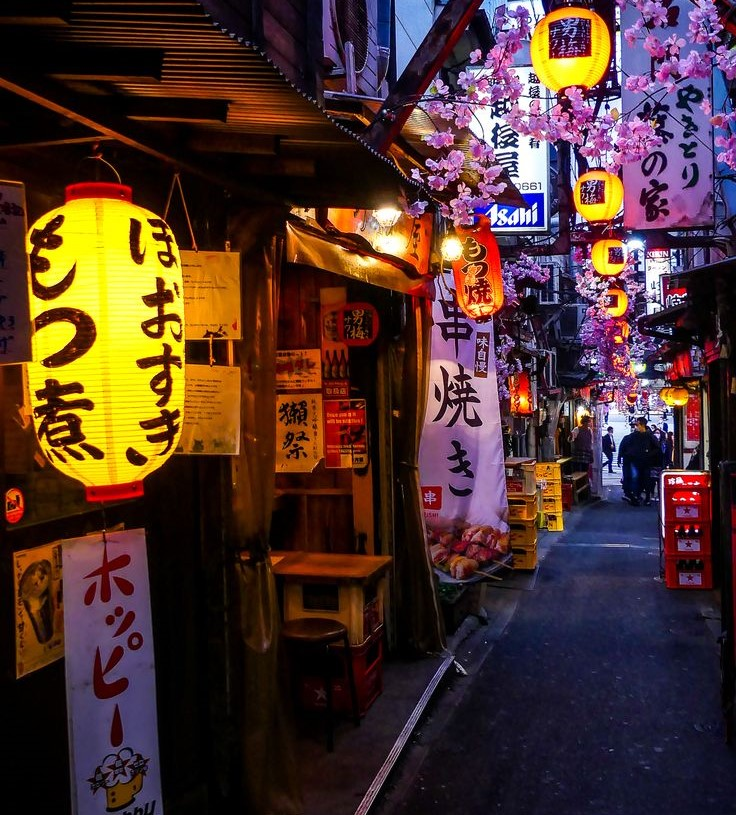

Sobre mí
Melannie Guadalupe Vera Montes
Dirección: Fraccionamiento Aeropuerto, Calle Charlie / Victor y Quebec #1723
Teléfono: 6421603605
Correo electrónico: veramelannie1@gmail.com
Experiencia en:
Ingeniera en Software con experiencia en desarrollo y programación en diversos lenguajes y entornos.
Especializada en JavaScript, SQL y Python, con dominio de herramientas como Visual Studio Code, Visual Studio y NetBeans.
Capaz de diseñar, desarrollar e implementar soluciones tecnológicas eficientes.
Estudios:
Primaria: Adolfo López Mateo
Secundaria: Heroico Colegio Militar #29
Preparatoria: CBTIS #207
Universidad: Ingeniería en Software
Mis juegos favorios
Imagen a la Izquierda
GTA V:Grand Theft Auto V (GTA V) es un juego de mundo abierto desarrollado por Rockstar Games en 2013.
Ambientado en Los Santos, sigue a tres protagonistas en una serie de atracos y conflictos criminales.
Combina acción, exploración y un modo multijugador (GTA Online), destacando por su realismo y libertad.
Imagen a la Izquierda
Red Dead Redemption 2: es un juego de acción y aventura donde los jugadores controlan a Arthur Morgan, un forajido en el Viejo Oeste.
La historia sigue su lucha interna mientras la banda enfrenta su fin.
Ofrece un mundo abierto con actividades como cazar y robar trenes, y un sistema de honor que influye en las interacciones.
Es reconocido por su realismo, narrativa profunda y jugabilidad variada.
Mis Series Favoritas
Imagen a la Izquierda

Orange Is the New Black: es una serie que narra la vida de Piper Chapman, quien es enviada a prisión por un delito
cometido años antes. A lo largo de la serie, se exploran las historias de las reclusas y los desafíos dentro del
sistema penitenciario, con una mezcla de drama y comedia.
Imagen a la Izquierda
Imagen a la Izquierda
You: es una serie de thriller psicológico sobre Joe Goldberg, un hombre obsesivo
que acecha a las mujeres de las que se enamora, justificando sus crímenes como protección.
La historia se narra desde su perspectiva, explorando temas de amor tóxico, acoso y obsesión.
Me gustaria visitar
Imagen a la Izquierda

Japón es un país de contrastes donde tradición y modernidad conviven en armonía. Sus templos, jardines zen y el monte Fuji reflejan
su legado histórico, mientras que Tokio y su tecnología muestran su innovación. Su gastronomía,
festividades y estética única lo hacen fascinante.
Imagen a la Izquierda
Imagen a la Izquierda
Colombia es un país vibrante y diverso, conocido por su riqueza cultural, paisajes impresionantes y gente cálida.
Desde las playas del Caribe hasta la selva amazónica y la imponente Cordillera de los Andes, su geografía es tan variada como su cultura.
Famoso por su café, su música como el vallenato y la cumbia,
y su colorida arquitectura colonial, Colombia combina historia, naturaleza y modernidad en una experiencia única.
Imagen a la Izquierda